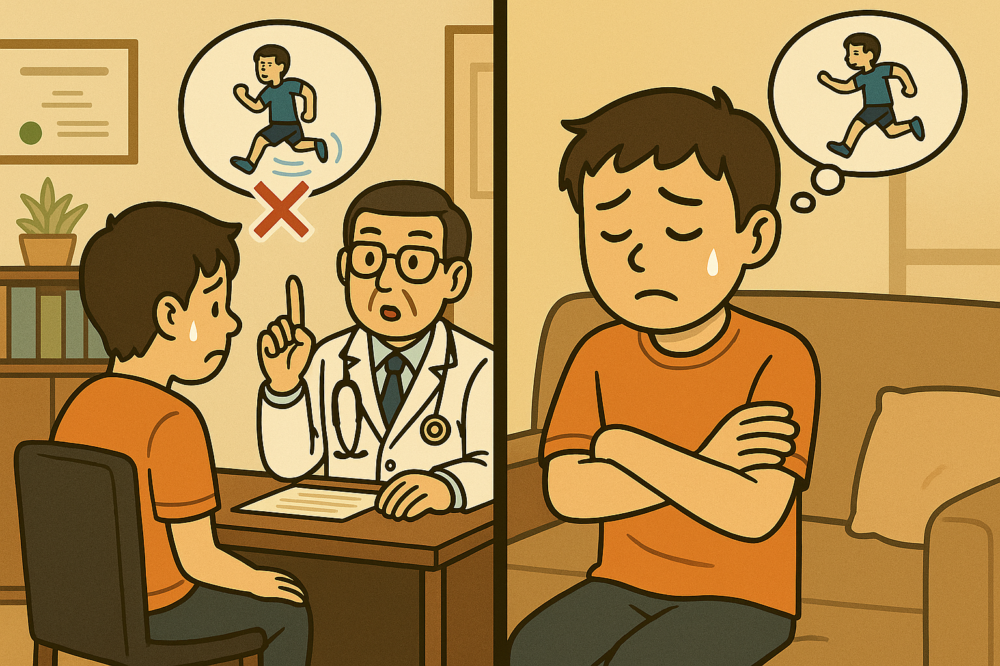
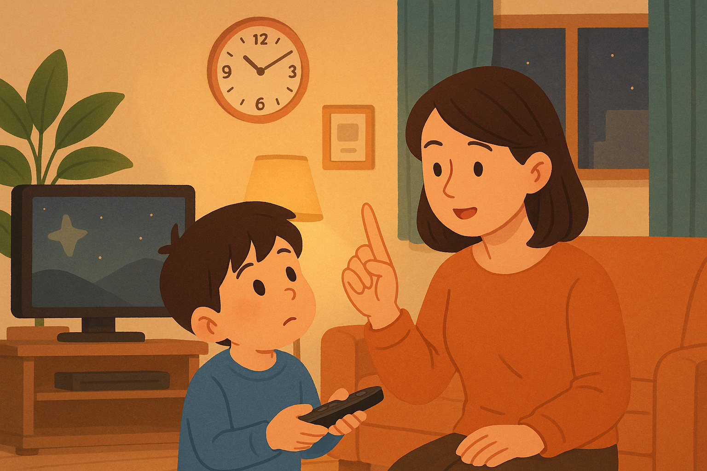

하늘 씨는 오늘 친구와 만나기로 했어요.
그런데 일이 늦게 끝나서 약속 시간에 30분 늦었어요. 하늘 씨 때문에 친구는 계속 기다렸어요.
그런데 일이 늦게 끝나서 약속 시간에 30분 늦었어요. 하늘 씨 때문에 친구는 계속 기다렸어요.
하늘 씨가 친구를 기다리게 했어요.
(동사)＋-게 하다
하늘 씨가 친구를 기다리게 했어요.
기다리다 → 기다리 ＋ -게 하다 → 기다리게 하다
사다 → 사 ＋ -게 하다 → 사게 하다
못 본다 → 못 보 ＋ -게 하다 → 못 보게 하다
(동사)＋-게 하다
연습실 밖을 못 나가게 해요.
못 ＋ 나가다 → 못 나가 ＋ -게 하다 → 못 나가게 하다
문장을 듣고 따라서 읽어 봅시다.

문장을 듣고 따라서 읽어 봅시다.
'-게 하다'를 사용해서 빈 칸에 알맞게 쓰십시오.
어렸을 때 어머니가 저에게 우유를 많이 __________.(마시다)
그림을 보고 빈 칸에 알맞게 쓰십시오.
Q:우리 아이는 날마다 밤 늦게까지 텔레비전을 봐요.
A:그건 조금 걱정되네요. 아이에게 밤 9시까지만 _________.
그림을 보고 빈 칸에 알맞게 쓰십시오.
Q:수아 씨는 영어 단어를 많이 아시네요.
A:네, 고등학교 때 선생님께서 단어를 많이 __________.
🎉잘 하셨어요!
아래 버튼을 눌러 처음부터 다시 시작하거나, 다른 학습으로 이동해 보세요.